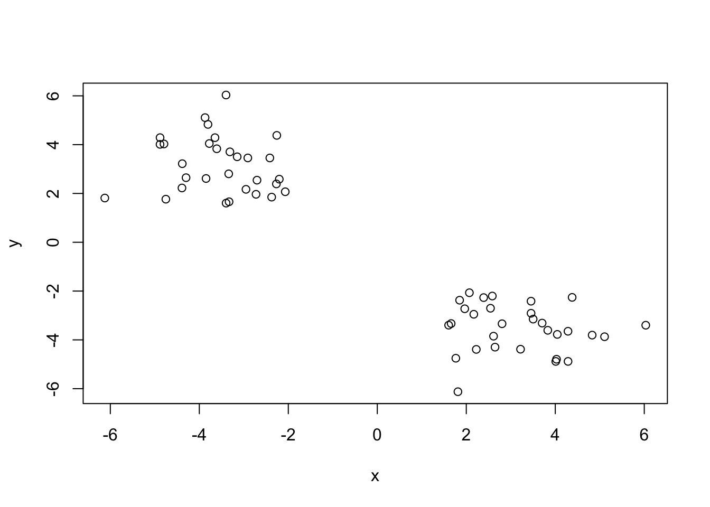
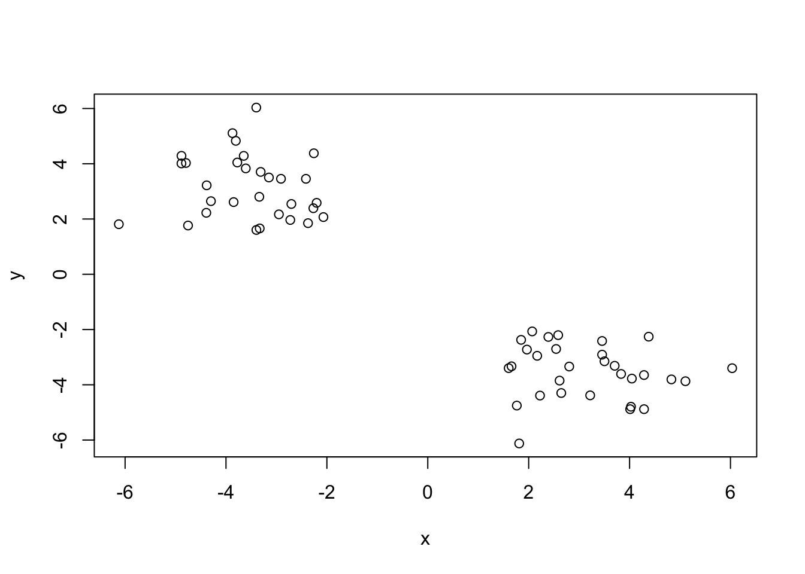
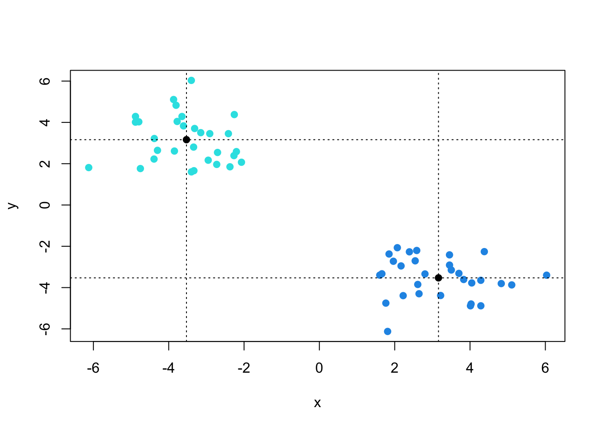
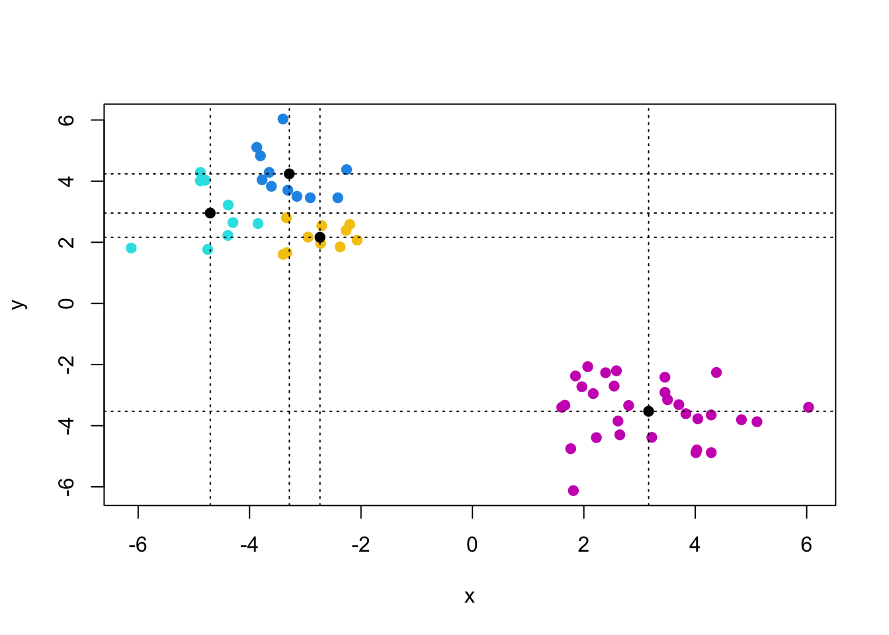
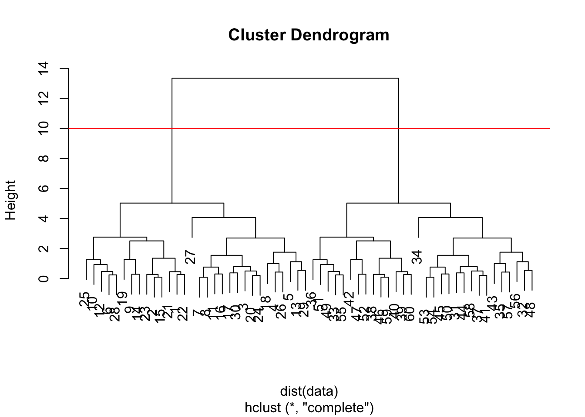
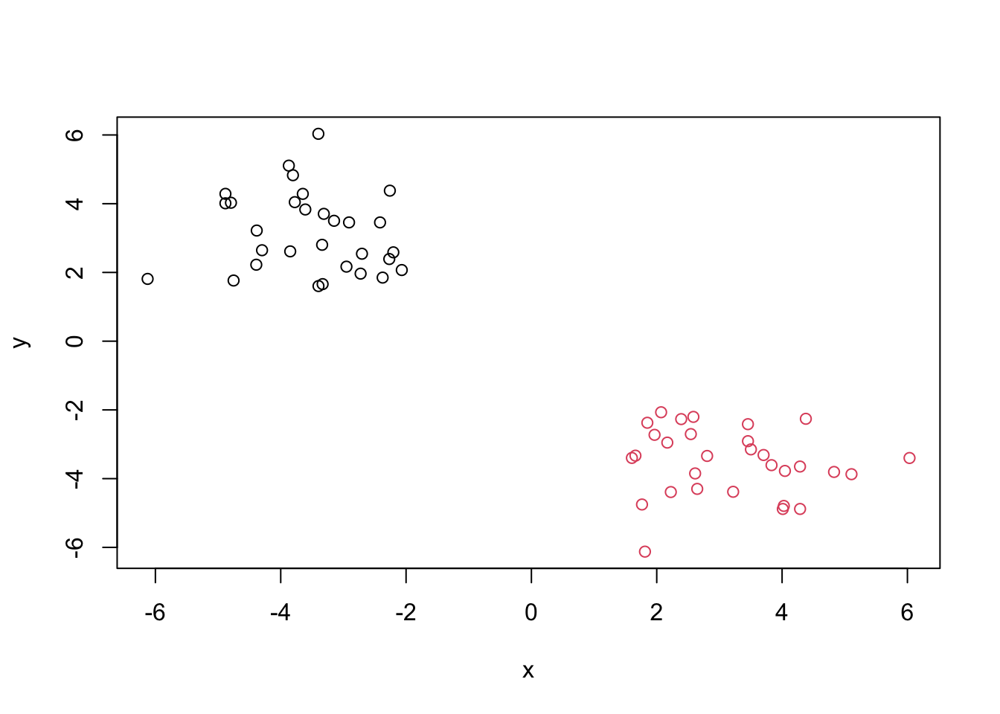
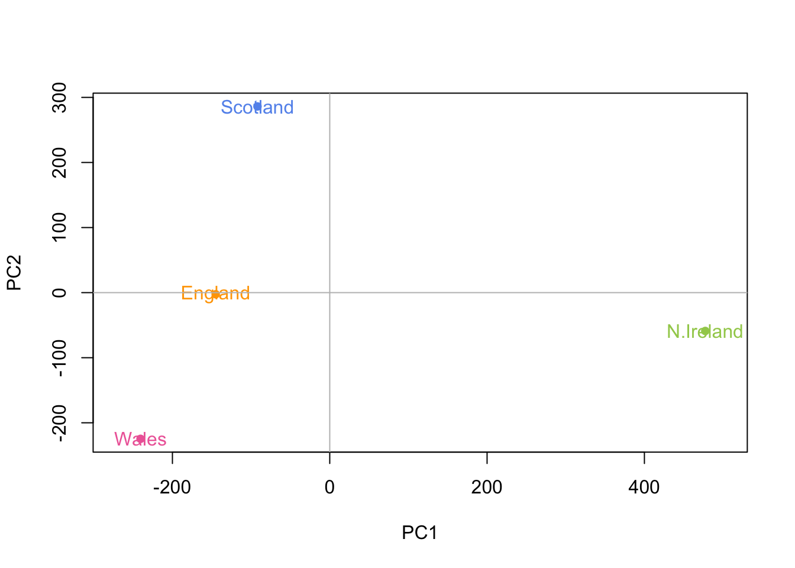

# Make up some data
temp <- c(rnorm(30, -3), rnorm(30, +3))
data <- cbind(x=temp, y=rev(temp))
plot(data)
Today we will start our multi-part exploration of some key machine learning methods. We will begin with clustering- finding groupings in data, and then dimensionality reduction.
Let’s start with “k-means” clustering. The main function in base R for this is kmeans().
# Make up some data
temp <- c(rnorm(30, -3), rnorm(30, +3))
data <- cbind(x=temp, y=rev(temp))
plot(data)
Now let’s try out kmeans()
km <- kmeans(data, centers=2)
kmK-means clustering with 2 clusters of sizes 30, 30
Cluster means:
x y
1 3.162515 -3.528954
2 -3.528954 3.162515
Clustering vector:
[1] 2 2 2 2 2 2 2 2 2 2 2 2 2 2 2 2 2 2 2 2 2 2 2 2 2 2 2 2 2 2 1 1 1 1 1 1 1 1
[39] 1 1 1 1 1 1 1 1 1 1 1 1 1 1 1 1 1 1 1 1 1 1
Within cluster sum of squares by cluster:
[1] 66.73238 66.73238
(between_SS / total_SS = 91.0 %)
Available components:
[1] "cluster" "centers" "totss" "withinss" "tot.withinss"
[6] "betweenss" "size" "iter" "ifault" Q. How many points in each cluster?
km$size[1] 30 30Q. What component of your result object details cluster assignment/membership?
km$cluster [1] 2 2 2 2 2 2 2 2 2 2 2 2 2 2 2 2 2 2 2 2 2 2 2 2 2 2 2 2 2 2 1 1 1 1 1 1 1 1
[39] 1 1 1 1 1 1 1 1 1 1 1 1 1 1 1 1 1 1 1 1 1 1Q. What are centers/mean values of each cluster?
km$centers x y
1 3.162515 -3.528954
2 -3.528954 3.162515Q. Make a plot of your data showing your clustering results (groupings/clusters and cluster centers).
plot(data, col=km$cluster+3, pch=19)
points(km$centers, pch=19)
abline(v=km$centers[,1], h=km$centers[,2], lty=3)
Q. Run
kmeans()again and cluster in 4 groups and plot the results.
km2 <- kmeans(data, centers=4)
plot(data, col=km2$cluster+3, pch=19)
points(km2$centers, pch=19)
abline(v=km2$centers[,1], h=km2$centers[,2], lty=3)
This “bottom-up” form of clustering aims to reveal the structure in your data by progressively grouping points into an ever smaller number of clusters.
The main function in base R for this called hclust(). This function does not take our input data directly, but wants a “distance matrix” that details how (dis)similar all our input points are to each other.
hc <- hclust(dist(data))
hc
Call:
hclust(d = dist(data))
Cluster method : complete
Distance : euclidean
Number of objects: 60 The print out above is not very useful (unlike with kmeans()) but there is a useful plot() method.
plot(hc)
abline(h=10, col="red")
To get my main result (my cluster membership vector) I need to “cut” my tree using the function cutree().
grps <- cutree(hc, h=10)
plot(data, col=grps)
Importing and inspecting data:
url <- "https://tinyurl.com/UK-foods"
ukFoods_df <- read.csv(url, row.names=1)
head(ukFoods_df) England Wales Scotland N.Ireland
Cheese 105 103 103 66
Carcass_meat 245 227 242 267
Other_meat 685 803 750 586
Fish 147 160 122 93
Fats_and_oils 193 235 184 209
Sugars 156 175 147 139Initial plots, spotting any differences:
barplot(as.matrix(ukFoods_df), beside=T, col=rainbow(nrow(ukFoods_df)))
barplot(as.matrix(ukFoods_df), beside=F, col=rainbow(nrow(ukFoods_df)))
pairs(ukFoods_df, col=rainbow(10), pch=16)
In general, these plots are unhelpful for analyzing datasets with multiple dimensions. PCA is a better way of finding these differences and trends among data points.
Use prcomp() to perform PCA.
pca <- prcomp(t(ukFoods_df))
summary(pca)Importance of components:
PC1 PC2 PC3 PC4
Standard deviation 324.1502 212.7478 73.87622 3.176e-14
Proportion of Variance 0.6744 0.2905 0.03503 0.000e+00
Cumulative Proportion 0.6744 0.9650 1.00000 1.000e+00PC1 and PC2 account for ~96.5% of the variance in the data, useful to plot these two against each other to see differences in data. This is called an ordination plot.
# Plot PC1 vs PC2
color=c("orange", "hotpink2", "cornflowerblue", "darkolivegreen3")
plot(pca$x[,1], pca$x[,2], xlab="PC1", ylab="PC2", xlim=c(-270,500), pch=16, col=color)
text(pca$x[,1], pca$x[,2], colnames(ukFoods_df), col=color)
abline(v=0, h=0, col="gray")
Another inportant output from pCA is called the “loadings” vector or the “rotation” component - this tells us how much the original variables (the foods in this case) contribute to the new PCs.
## Lets focus on PC1 as it accounts for > 67% of variance
par(mar=c(10, 3, 0.35, 0))
barplot( pca$rotation[,1], las=2 )
PCA looks to be a super useful method for gaining some insight into high dimensional data that is difficult to examine in other ways.